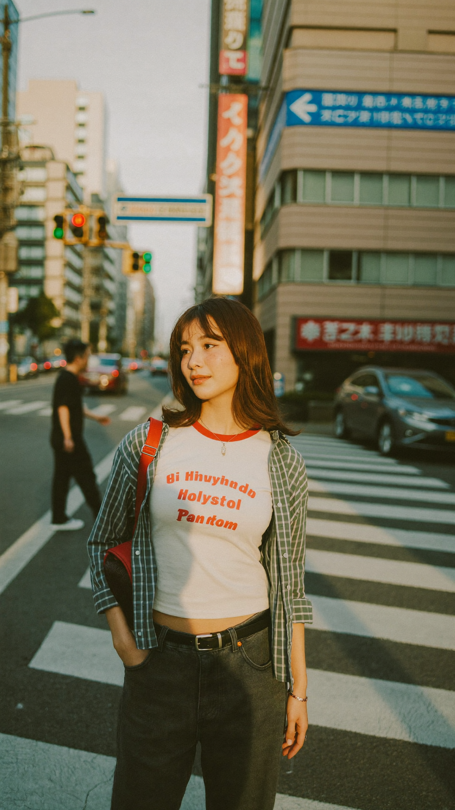
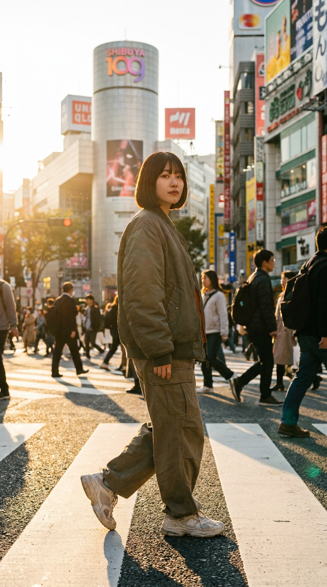
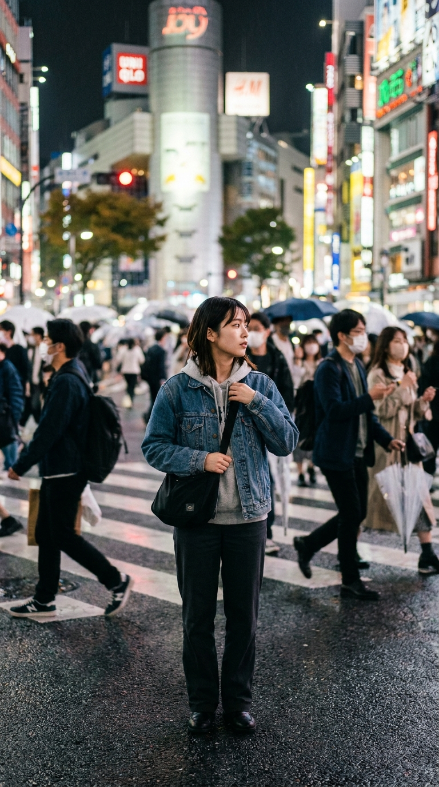
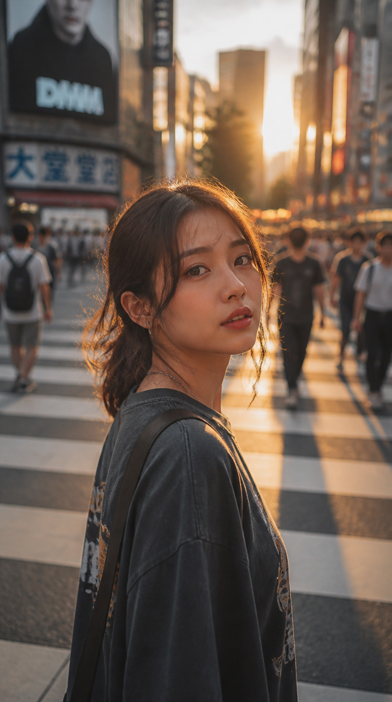
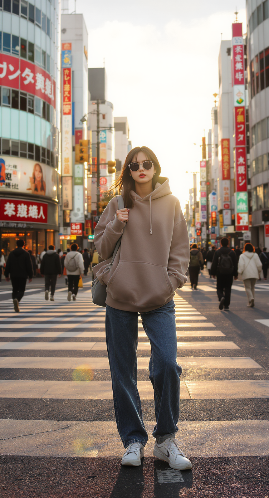
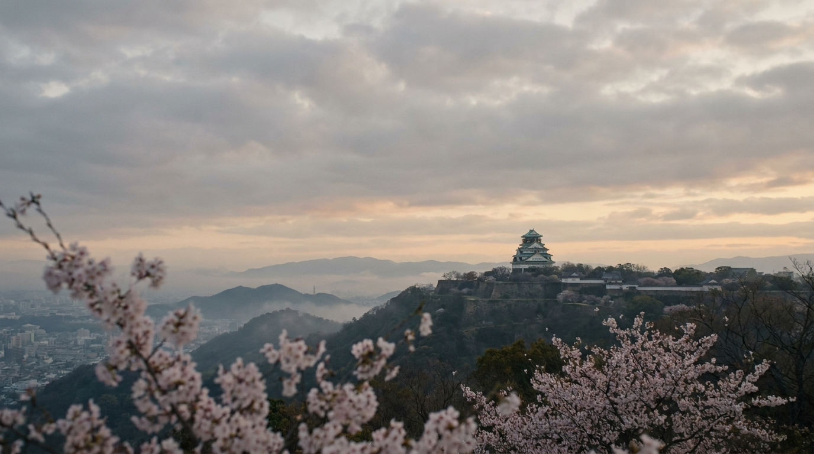

1-1. 代表モデルの選び方
Higgsfieldには20種類以上の画像モデルがあります。用途別に絞ると迷いません。
Soul 2.0
人物・ポートレート
肌質・表情・髪の毛の再現が最高水準。人物が主役のコンテンツに最適。最安クラスで費用対効果が圧倒的。
コスト 0.12 cr比率 9:16 / 1:1
Nano Banana Pro
汎用・環境
人物+背景の空気感を両立。渋谷・新宿など都市環境の描写が特に得意。プロンプトへの追従性が高い。
コスト 2 cr比率 全形式対応
GPT Image 2
テキスト・ロゴ
画像内の文字描写が唯一信頼できるモデル。lowで確認→highで最終書き出しの2段階運用が効率的。
low 0.5 crhigh 7 cr
Soul Cast
キャラクター固定
テキストのみで一貫したキャラクターを生成。Soul Characterを事前に学習させることで同一人物を量産できる。
コスト 0.12 cr
Flux Kontext
画像編集
既存画像への指示編集が得意。「背景だけ変える」「服だけ変える」など部分的な変更に強い。
コスト 2 cr
Cinema Studio 2.5
映画的スチル
映画のスチル写真のような質感。カラグレやシネマティックな照明を静止画で試したいときに使う。
コスト 2 cr
1-2. 効果的なプロンプト構造
[被写体], [状況・動作], [場所・背景],
[照明], [カメラ・レンズ], [スタイル]
"Japanese woman in her 20s, standing at Shibuya crossing,
golden hour lighting, 85mm portrait lens, cinematic, photorealistic"
"Green tea can product shot, clean white studio background,
soft box lighting, commercial photography, 4K, ultra detailed"
1-3. 基本操作手順（テキスト → 静止画）
1
Generate → Image を選択 左サイドバーから Generate を開き、Image タブをクリック。
2
モデルを選択 上部のモデルドロップダウンから用途に合ったモデルを選ぶ（例：Soul 2.0）。
3
プロンプトを入力 英語で「被写体 + 環境 + 照明 + スタイル」の順に記述する。
4
アスペクト比を設定 SNS縦型は 9:16、横型動画用素材は 16:9、汎用は 1:1 を選択。
5
Generate をクリック 生成が完了したら Library → Generations で結果を確認・ダウンロード。
1-4. 画像 → 画像（参照画像を使った編集）
生成した画像を参照画像として使うことで、構図やキャラクターを維持しながら変更を加えられます。
1
Image タブで「Add Reference」 元画像をアップロードまたはライブラリから選択。
2
Role を設定 image（構図参照）/ style（スタイル参照）/ character（人物参照）から選択。
3
変更したい要素だけプロンプトに書く 「change background to snowy mountain」のように差分を指示。
1-5. 実際の生成結果比較（同一テーマ・モデル別）
5枚すべて同一のプロンプトで生成しています。モデルによって解釈・表現がどう異なるかを比較してください。
A young Japanese woman in casual streetwear, standing on a Shibuya crossing, golden hour, cinematic color grading, shallow depth of field
カジュアルなストリートウェアを着た若い日本人女性が、渋谷の交差点に立っている。ゴールデンアワー。映画的なカラーグレーディング。浅い被写界深度。

Soul 2.0
0.12 cr
肌質・髪・表情がリアル。カフェシーンでもライティングの再現度が高い。

Nano Banana Pro
2 cr
渋谷109の背景まで含めた「場所の空気感」が秀逸。人物と都市環境の両立。

Cinema Studio 2.5
2 cr
同一プロンプトでもゴールデンアワーを夜の雨の渋谷に昇華。映画的な空気感・群衆のボケ・濡れた路面の反射まで自律的に演出する。

GPT Image 2（low）
0.5 cr
渋谷の交差点に立つ女性。ゴールデンアワーの逆光と映画的なカラグレが表現できている。lowクオリティでもポートレートの質感は十分実用レベル。

Flux Kontext
2 cr
プロンプトへの追従性が高く、全身・背景の看板・群衆まで緻密に描写。ゴールデンアワーの光とレンズフレアの再現が自然。
Tips： Soul 2.0 で人物を生成してから、Flux Kontext で背景だけ差し替えるという2段階の使い方が最もクレジット効率がよい。人物クオリティを0.12crで確保してから、背景変更に2crを使う形。
2-1. 動画モデルの選び方
Seedance 2.0
人物・参照駆動
参照画像からキャラクターのアイデンティティを維持しながら動画化。人物が主役のクリエイティブに最適。モーションのリアリティが高い。
コスト 〜10 cr長さ 最大10秒
Kling 3.0
マルチショット・音声
複数ショットの切り替えとネイティブ音声生成に対応。Start Frame / End Frameで動きの始点と終点を指定できる。
コスト 〜12 cr音声 対応
Veo 3.1
環境音・高品質
Google DeepMind製。環境音・環境音楽の自動生成が秀逸。城・自然・建築など非人物コンテンツの品質が高い。
コスト 〜15 cr音声 環境音自動
Cinema Studio Video V2
映画的・高制御
Cinema Studioのビデオ版。カメラワーク・照明・Speed Rampを細かく制御できる。ドラフト確認はV2（8cr）で行いV3（75cr）で最終出力。
V2 8 crV3 75 cr
2-2. テキスト → 動画
最もシンプルなワークフロー。プロンプトだけで動画を生成します。
"SHOT — Cinematic wide shot of Osaka castle at dawn.
Cherry blossoms fall slowly in the foreground.
Warm golden light rakes across the stone walls.
Ambient sound: gentle wind, distant temple bell.
No music. No people."
"Young Japanese woman walking through Shibuya crossing at night,
neon reflections on wet pavement, slow motion 120fps,
cinematic bokeh, photorealistic"
1
Generate → Video を選択
2
モデルを選択 人物主役→Seedance 2.0、環境・風景→Veo 3.1 が基本選択。
3
プロンプトを入力 SHOTタイプ・被写体・照明・音声の4要素を英語で記述。
4
アスペクト比・長さを設定 縦型SNS用は9:16、YouTube用は16:9。長さは5〜10秒が標準。
2-3. 画像 → 動画（Start Frame）
静止画を動画の出発点として使うワークフロー。Ch.1で生成した画像をそのまま動かせます。
1
Video タブ → 「Add Media」 Ch.1で生成した静止画を選択し、Role を「start_image」に設定。
2
動きのプロンプトを追加 「camera slowly pulls back」「gentle head turn to the right」など動作を指示。
3
Kling 3.0 を推奨 Start Frame / End Frame 両方指定できるため、動きの制御精度が高い。
2-4. 音声付き動画
音声生成の選択肢： ①Kling 3.0のネイティブ音声生成（プロンプトに音声指示を含める）、②Veo 3.1の環境音自動付与、③外部で生成した音声ファイルをアップロードして medias の role に "audio" を指定する方法、の3通りがあります。
"Aerial shot of Japanese countryside in autumn.
Red and orange maple trees covering rolling hills.
Sound design: rustling leaves, distant stream, soft wind.
No dialogue. Ambient only."
2-5. 動画化の素材例（Veo 3.1 向けスチル）
以下はVeo 3.1で「城・夜明け・環境音」動画を生成する際に使用した参照スチル画像です。この静止画をStart Frameとして渡し、桜が揺れ・霧が流れる動画を生成しました。

Veo 3.1 参照画像 城・桜・夜明け / 16:9 / このスチルをStart Frameに設定 → 「cherry blossoms fall slowly, morning mist drifts through the valley, ambient temple bell」でテキストプロンプトを追加
↑ Veo 3.1 生成動画 上の静止画をStart Frameに設定して生成。霧の流れ・桜の揺れ・夜明けの光の変化が自然に表現され、環境音が自動付与される。
Cinematic wide shot of Japanese castle on a misty hillside at dawn. Cherry blossoms gently sway in the foreground. Morning mist slowly drifts through the valley below. Soft golden light breaks through overcast clouds. Ambient sound: distant temple bell, gentle wind through blossoms. Camera: static with subtle push in. No music. No people.
夜明けの霧がかかった丘の上の日本の城を捉えたシネマティックなワイドショット。手前で桜が静かに揺れる。朝の霧が眼下の谷をゆっくりと流れる。曇り空から柔らかな金色の光が差し込む。環境音：遠くの寺の鐘、桜の花を抜ける穏やかな風。カメラ：わずかなプッシュインを伴う固定。音楽なし。人物なし。
2-6. モデル別 生成動画サンプル
同一テーマで各モデルが生成した動画です。モーションの質・描写の優先順位の違いを比較できます。
Seedance 2.0
〜10 cr · 人物参照駆動
参照画像からキャラクターを維持しながら動画化。表情・髪の揺れがリアル。ファイルサイズが最も軽く、SNS投稿向き。
Young Japanese woman walking through Shibuya crossing at night, neon reflections on wet pavement, slow motion 120fps, cinematic bokeh, photorealistic
夜の渋谷の交差点を歩く若い日本人女性。濡れた路面に映るネオンの反射。スローモーション120fps。映画的なボケ。フォトリアル。
Kling 3.0
〜12 cr · マルチショット・音声
Start / End Frame を活用した動きの制御が精密。ネイティブ音声生成に対応しており、BGM・環境音を自動付与できる。
Aerial shot of Japanese countryside in autumn. Red and orange maple trees covering rolling hills. Sound design: rustling leaves, distant stream, soft wind. No dialogue. Ambient only.
秋の日本の農村の空撮。赤とオレンジのもみじが連なる丘を覆う。音響：葉の擦れる音、遠くの小川、柔らかな風。台詞なし。環境音のみ。
2-7. Cinema Studio Video V2 vs V3 画質比較
同一プロンプトでV2（ドラフト確認用）とV3（最終出力）を比較できます。方向性の確認はV2で行い、OKならV3で最終出力するのが基本ワークフローです。
Ancient Japanese castle on a misty mountain at dawn, cherry blossoms falling slowly, cinematic wide shot, atmospheric fog, ultra realistic, birds flying in the distance
夜明けの霧がかかった山の上の古い日本の城。桜の花びらがゆっくりと舞い落ちる。シネマティックなワイドショット。大気感のある霧。超リアル。遠くを飛ぶ鳥。
V2 — ドラフト確認用 · 8 cr
カメラワーク・構図・モーションの方向性を確認するためのドラフト。本番前にここで意図通りかを検証する。
V3 — 最終出力 · 75 cr
V2で方向性を確認後、同設定で生成した最終出力。霧の質感・桜の粒子・光の回りが大幅に向上している。
コスト節約術： Cinema Studio Video V3（75cr）で生成する前に、必ずV2（8cr）でドラフトを確認する。構図・モーションが意図通りかをV2で検証してからV3に進む。これだけで無駄な高額生成を防げる。
📄
独立チュートリアルを別途作成予定
Marketing Studio は機能が多岐にわたるため、本ドキュメントでは概要のみを扱います。広告モードの使い分け・Hook / Setting の詳細設定・Avatar との組み合わせなど、実践的な操作手順は 「Marketing Studio 完全チュートリアル」 として別途独立したドキュメントを作成予定です。
3-1. Marketing Studio とは
Marketing Studioは「商品を広告する動画」に特化した自動生成エンジンです。テキストプロンプトを書く代わりに、商品のURLや画像を渡すだけで、商品の特性を自動解析して広告動画を生成します。
テレビCMの制作に例えると、従来の動画生成は「脚本家→監督→カメラマン」という工程を自分でこなす必要がありましたが、Marketing Studioでは「商品を渡せば広告代理店が全部やってくれる」イメージです。
product と webproduct の違い：
product（物理商品）→ ECサイトの商品ページURL、商品画像など特定の「物」を広告したい場合。
webproduct（サービス・アプリ）→ App Store / Google Play のリスト、SaaSのランディングページなど「サービス全体」を広告したい場合。
3-2. 9つの広告モード
🎬 UGC
ユーザー生成コンテンツ風。インフルエンサーが商品を紹介するような自然な演出。
Hook / Setting 対応
📚 Tutorial
商品の使い方を段階的に説明するハウツー動画。操作方法や手順の可視化に最適。
Hook / Setting 対応
📦 Unboxing
開封シーンを演出した動画。商品の「初見の感動」を伝えるEC向けフォーマット。
Hook / Setting 対応
⭐ Product Review
レビュー動画風。使用感や評価を語るスタイルで信頼性を演出。
Hook / Setting 対応
👗 UGC Virtual Try On
ファッション・コスメなどの試着体験を演出。商品を実際に使っている様子を生成。
Hook / Setting 対応
🎨 Product Showcase
商品そのものをシンプルに魅せる。白背景・スタジオ撮影風の商品動画。
基本モード
🌅 Lifestyle
商品を使っているライフスタイルシーンを演出。憧れ・世界観の訴求に強い。
基本モード
✨ Before / After
使用前後の変化を動画で対比。美容・クリーニング・リフォーム系に効果的。
基本モード
📱 App Demo
アプリの操作画面をスクリーンキャプチャ風に動かすデモ動画。webproduct向け。
基本モード
3-3. Hook と Setting（演出のカスタマイズ）
UGC・Tutorial・Unboxing・Product Review・UGC Virtual Try Onの5モードでは、Hook（冒頭の掴み方）とSetting（舞台・ロケーション）を追加指定できます。
Hook（掴み）
冒頭数秒で視聴者の注意を引く演出のタイプ。「Object flies into frame」「Dramatic reveal」「Before state shown first」などがある。広告の第一印象を左右する最重要パラメータ。
Setting（舞台）
動画の背景・ロケーション・雰囲気を指定。「Sunlit kitchen, morning light」「Urban rooftop, golden hour」「Minimalist studio, white backdrop」など。商品の世界観と合わせる。
3-4. 基本ワークフロー（URL → 広告動画）
1
Marketing Studio を開く 左サイドバーの「Marketing Studio」をクリック。
2
商品を登録 「+ New Product」→ 商品ページのURLを貼り付ける（自動スクレイピングが始まる）。物理商品は product、アプリ・サービスは webproduct を選択。
3
プリセット（モード）を選択 9つのモードから目的に合ったものを選ぶ（例：UGC）。
4
Hook / Setting を設定（任意） 対応モードの場合、Hook と Setting を選択してカスタマイズ。
5
Generate をクリック URLのスクレイピングが完了次第、自動的に動画生成が始まる。
6
Library で確認・ダウンロード 生成完了後、Library → Generationsから確認。複数パターンを比較して最良のものを採用。
注意： URLが認証付きページ（ログイン必須）や動的に描画されるSPAの場合、スクレイピングが失敗することがあります。その場合は商品画像を直接アップロードしてproductを手動作成する方法（action='create'）を使います。
📄
独立チュートリアルを別途作成予定
Cinema Studio は映像制作の専門知識に踏み込んだ高度な機能を持つため、本ドキュメントでは概要のみを扱います。Mr.Higgs の活用・Elements の組み合わせ・Speed Ramp の全プリセット実例・V2→V3 の実践ワークフローなどは 「Cinema Studio 完全チュートリアル」 として別途独立したドキュメントを作成予定です。
4-1. Marketing Studio との根本的な違い
Marketing Studioが「商品起点」であるのに対し、Cinema Studioは「映像表現起点」です。監督が「このシーンをこのカメラワークで撮りたい」という発想で使うツールです。
Marketing Studio
商品 → 動画
「この商品をどう見せるか」が出発点。プロンプト不要。広告代理店に丸投げするイメージ。
Cinema Studio
表現 → 映像
「どんな映像を作るか」が出発点。カメラ・光・速度・音声まで監督として制御する。
4-2. 主要パラメータ
| パラメータ | 内容 | 主な選択肢の例 |
|---|
| Genre / Style | 映像の全体的なジャンルとトーン | Cinematic, Commercial, Documentary, Music Video, Horror, Sci-Fi |
| Camera Shot | ショットタイプとカメラの距離感 | Wide Shot, Medium, Close-up, Extreme Close-up, Aerial, POV |
| Camera Movement | カメラの動き方 | Static, Pan, Tilt, Dolly In/Out, Orbit, Handheld |
| Lighting | 照明の質・方向・色温度 | Golden Hour, Neon Night, Soft Box, Chiaroscuro, Silhouette |
| Color Grading | カラーグレーディングのプリセット | Teal & Orange, Film Noir, Pastel Dream, Cyberpunk, Raw Natural |
| Speed Ramp | 速度変化のプリセット（V3以降） | Bullet Time, Impact, Ramp Up, Slow Motion, Freeze Frame |
4-3. Mr.Higgs（AIアシスタント）の活用
Mr.HiggはCinema Studioに統合されたAIアシスタントです。「夕暮れの渋谷を歩く女性のシーンを作りたい」と話しかけると、Shot Type・Lighting・Color Grading・Speed Rampまでを自律的に設計して入力してくれます。
Mr.Higgsへの話しかけ方： 「映画のジャンル + 撮りたいシーン + 雰囲気」を日本語でもOKなので自然言語で伝える。例：「サイバーパンクな東京の路地裏、雨の夜、女性が傘を差して歩いている、スローモーション」
4-4. Elements（エフェクト素材）
ElementsはCinema Studioに合成できるエフェクト素材ライブラリです。雨・雪・炎・光の粒子・霧などの自然現象や、フィルムグレイン・レンズフレアなどの映像エフェクトを重ねられます。
自然現象系
雨、雪、霧、波、炎、落ち葉。リアル素材との合成で説得力を高める。
映像エフェクト系
フィルムグレイン、レンズフレア、光漏れ（Light Leak）、クロマアベレーション。
光・パーティクル系
ボケ光、キラキラ粒子、蛍光、レーザー光線。音楽系コンテンツに向いている。
4-5. Cinema Studio の基本ワークフロー
1
Cinema Studio を開く 左サイドバーから Cinema Studio を選択。
2
Mr.Higgs に概要を伝える（任意） 作りたいシーンを自然言語で説明するとパラメータが自動入力される。
3
各パラメータを確認・調整 Genre・Camera Shot・Camera Movement・Lighting・Color Gradingを手動で微調整。
4
必要に応じてElementsを追加 エフェクト素材を重ねてムードを強化。
5
V2（8cr）でドラフト生成 設定の方向性を確認する。
6
調整してV3（75cr）で最終出力 ドラフトで問題がなければV3で高品質版を生成。
4-6. Speed Ramp の8プリセット
| プリセット名 | 効果 | 向いているシーン |
|---|
| Bullet Time | 極限のスローモーション→通常速度 | 格闘・スポーツのクライマックス |
| Impact | 通常→瞬間スロー→通常に戻る | 衝突・着地・爆発の瞬間 |
| Ramp Up | スローから徐々に加速 | 走り出し・出発シーン |
| Ramp Down | 通常から徐々に減速→スロー終了 | 感動的なクローズアップ |
| Freeze Frame | 特定の瞬間を静止させてから再開 | タイトルテロップのタイミング合わせ |
| Time Lapse | 超高速で時間経過を表現 | 夜明け・群衆・雲の動き |
| Hyper Lapse | 移動しながらの高速経過 | 街中・旅行系コンテンツ |
| Echo | 動きが残像を引いてリピートする | 音楽MV・エモーショナルな演出 |
Cinema Studio V2 ドラフトサンプル： Ch.2「モデル別 生成動画サンプル」に掲載しているCinema Studio Video V2の動画がドラフト確認の実例です。カメラワーク・照明・Speed Rampの方向性をV2（8cr）で確認してから、同設定でV3（75cr）を実行する流れを参考にしてください。
コスト注意： Cinema Studio V3は1回75crと非常に高額です。Ultraプラン（月3,000cr）でも約40回しか使えません。必ずV2（8cr）でドラフト確認してから使ってください。
📄
独立チュートリアルを別途作成予定
Canvas はノードの組み合わせが無限にあるため、本ドキュメントでは概念と基本構成のみを扱います。テンプレートの設計・複数バリエーションの一括生成・チームでの共有ワークフロー構築などの実践例は 「Canvas 完全チュートリアル」 として別途独立したドキュメントを作成予定です。
5-1. Canvas とは
CanvasはHiggsfieldの全モデルをノード（部品）として組み合わせ、ワークフローを視覚的に設計する機能です。音楽制作の「DAW（Digital Audio Workstation）」で各トラックを繋いでミックスするように、画像生成→動画生成→エフェクト追加→書き出しの工程を一つのフロー図として保存できます。
Canvasが有効なケース：
① 同じワークフローを毎回繰り返している（例：商品画像→動画化→書き出し）
② 複数バリエーションを一括生成したい（例：10種類のカラーバリエーション動画）
③ チームで同じ設定を共有したい
5-2. 主要ノードタイプ
| ノード | 機能 | 入力 | 出力 |
|---|
| Image Gen | テキスト/参照画像から静止画生成 | Prompt / Image | Image |
| Video Gen | テキスト/画像から動画生成 | Prompt / Image / Audio | Video |
| Marketing Studio | 商品URLから広告動画生成 | URL / Image | Video |
| Cinema Studio | Cinema Studioのパラメータ付き動画生成 | Prompt / Parameters | Video |
| Transform | 画像・動画の変換・加工 | Image / Video | Image / Video |
| Output | 最終成果物として書き出す | Any | Download / Library |
5-3. 基本ワークフロー（ノードの組み方）
1
Canvas を開く 左サイドバーの「Canvas」をクリック。新規キャンバスを作成。
2
入力ノードを置く 右クリック→「Add Node」→「Image Gen」を選択し、プロンプトとモデルを設定。
3
次のノードを繋げる Image Genの出力ポート（右端の●）から「Video Gen」ノードの入力ポートへドラッグで接続。
4
最後にOutputノードを置く Video Genの出力をOutputノードに繋ぐ。
5
「Run」で一括実行 全ノードが順番に実行され、最終成果物がLibraryに保存される。
6
テンプレートとして保存 「Save as Template」でこのフロー全体を保存。次回から設定なしで即実行できる。
5-4. 実践例：商品画像 → 広告動画の自動生成フロー
[Input: 商品画像アップロード]
↓
[Image Gen: Soul 2.0]
prompt: "Product hero shot, studio lighting, white background"
model: soul_2
↓
[Marketing Studio]
mode: "UGC"
hook_id: "object_flies_in"
setting_id: "sunlit_kitchen"
↓
[Output]
→ Library に自動保存
5-5. Figma方式のコラボレーション
CanvasはFigmaと同様のリアルタイムコラボレーションに対応しています。同じキャンバスを複数人で同時編集でき、チームでのコンテンツ制作ワークフローを共有できます。
共有・Collab
キャンバスのURLを共有するだけでチームメンバーが同じフローを閲覧・編集可能。権限はView / Editで設定。
テンプレート配布
完成したワークフローをテンプレートとして公開。他のユーザーがコピーして自分のワークスペースで使える。
Canvasの活用タイミング： 同じ操作を3回以上繰り返していると気づいたらCanvasで自動化するサインです。「静止画生成 → 動画化 → Marketing Studio」のように3ステップ以上あるフローは必ずCanvasに落とし込む習慣をつけると作業効率が大幅に上がります。
画像モデル クレジット早見表
| モデル | 用途 | クレジット | コメント |
|---|
| Soul 2.0 | 人物・ポートレート | 0.12 cr | 最安。人物生成の費用対効果が圧倒的 |
| Soul Cast | キャラクター固定 | 0.12 cr | Soul 2.0と同コスト。一貫したキャラクター量産向け |
| Soul Cinema | 映画的人物 | 0 cr ※ | ※Ultraプラン特典の可能性あり。要確認 |
| Nano Banana Pro | 汎用・環境 | 2 cr | 汎用の標準コスト。追従性が高い |
| GPT Image 2（low） | テキスト確認 | 0.5 cr | テキスト確認用。high の 1/14 のコスト |
| GPT Image 2（high） | テキスト最終 | 7 cr | テキスト描写が確実に必要な最終出力のみ使用 |
| Cinema Studio 2.5（静止画） | 映画的スチル | 2 cr | Nano Banana Proと同コストで映画的質感 |
| Flux Kontext | 画像編集 | 2 cr | 部分編集に強い |
動画モデル クレジット早見表
| モデル | 用途 | クレジット目安 | コメント |
|---|
| Seedance 2.0 | 人物動画 | 〜10 cr | 参照駆動でキャラクター維持に強い |
| Kling 3.0 | 音声付き動画 | 〜12 cr | Start/End Frame + ネイティブ音声対応 |
| Veo 3.1 | 環境動画 | 〜15 cr | 環境音自動付与。非人物コンテンツに強い |
| Cinema Studio Video V2 | ドラフト確認 | 8 cr | V3の前に必ずV2で確認すること |
| Cinema Studio Video V3 | 最終出力 | 75 cr | Ultraプランで月40回が上限。慎重に使用 |
クレジット節約の黄金ルール
🔑 ルール1：ドラフト→本番の2段階
高額モデル（Cinema V3 75cr、GPT Image 2 high 7cr）を使う前に、安価なドラフト版で方向性を確認してから本番生成に進む。
🔑 ルール2：人物はSoul 2.0に任せる
人物が主役のコンテンツは必ずSoul 2.0（0.12cr）を使う。他のモデルで人物を生成するのは明確な理由がある場合のみ。
🔑 ルール3：Soul 2.0 + Flux Kontextの組み合わせ
人物をSoul 2.0で生成（0.12cr）→背景だけFlux Kontextで差し替え（2cr）。人物クオリティを最小コストで確保する最強コンビ。
🔑 ルール4：CanvasでRun前に設定を確認
Canvasで複数ノードを一括実行する前に、各ノードのモデルとパラメータを必ず確認。高額モデルが複数連鎖すると一気にクレジットが消える。
クレジット管理の目安（Ultraプラン 3,000cr/月）：
・Soul 2.0 静止画：25,000枚（使い放題レベル）
・Nano Banana Pro 静止画：1,500枚
・Cinema Studio Video V3：40本（月上限に注意）
・Veo 3.1 動画：200本程度
Cinema Studio V3の多用だけはクレジットを急速に消費するので特別な注意が必要です。